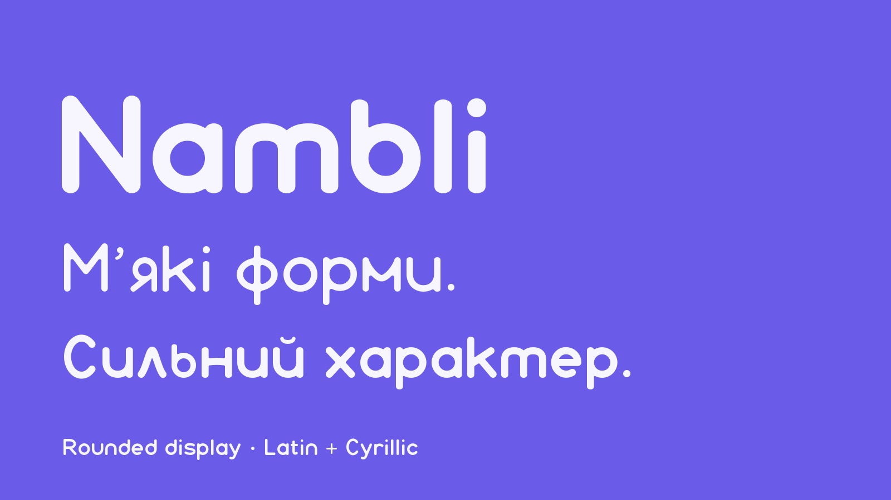
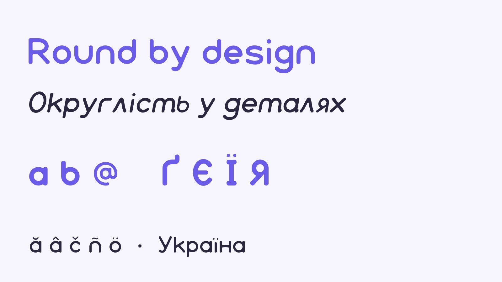
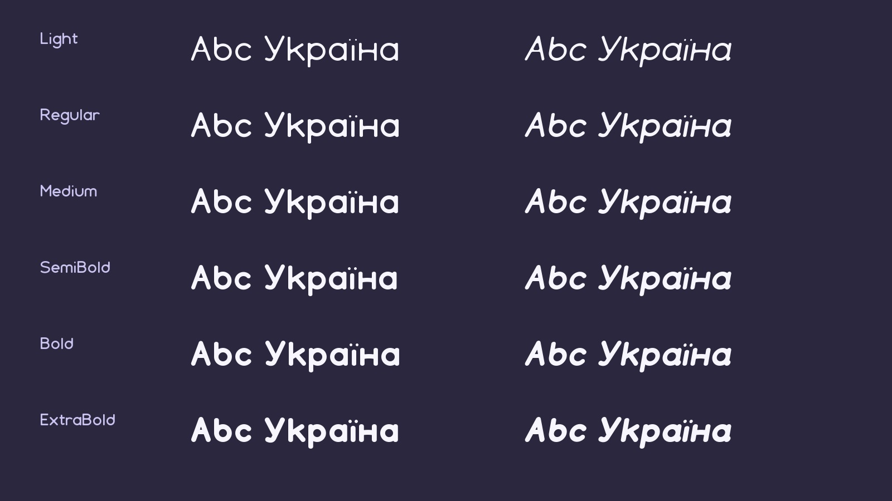

Nambli is a rounded display typeface for branding, headings and short passages of text. Soft terminals, circular bowls and open forms give the family a friendly voice. Its design brings the same rounded vocabulary to Latin and Cyrillic lettering, with particular attention to Ukrainian. To contribute, see github.com/Tor-Production/nambli-font.

The family includes six weights: Light, Regular, Medium, SemiBold, Bold and ExtraBold. Each weight is paired with an italic, giving twelve static styles. Lighter weights provide a quieter rhythm, while the heavier styles emphasize the rounded ends and generous bowls. The italic styles add movement while retaining the family’s characteristic curves. The range allows headings and supporting text to share a consistent character.
Nambli’s letterforms were refined through successive visual reviews. The development process focused on connections between straight strokes and curves, the thickness of bowls, the relationship between Latin and Cyrillic shapes, and the behavior of hooks and tails. Smooth joins and circular counters are central to the design. A coordinated approach to Cyrillic construction helps Ukrainian characters sit comfortably beside their Latin counterparts.

Extended Latin and Cyrillic coverage is included in every style. Each font contains 970 encoded characters and 998 glyphs. The fonts include combining marks, mark positioning and localized forms for multilingual setting. These features are part of the released font software; language and specialist typographic review can help the project improve their use in particular contexts. Availability through a web service also depends on that service’s subset definitions and shaping behavior.
Nambli is intended especially for identity work, display lettering, headings and short text. Its rounded forms can be used across different applications while the weight range provides contrast within one family. Actual type samples in these images show the released font outlines, including the approved Ukrainian and Latin designs.

The project was developed under the creative direction of Yurii Tor with AI-assisted outline programming and font engineering. This assistance is disclosed in the project’s provenance documentation. Human review directed the letter construction, joins, tails, proportions, stroke weights and spacing. The editable UFO sources, OpenType feature source and reproducible Fontmake build are available in the upstream repository.
The font software is distributed under the SIL Open Font License 1.1, with no Reserved Font Name. All twelve styles are part of the same open release. The upstream repository welcomes reports about language coverage, shaping and design details, and records the sources and validation used to prepare the family.